Ce este abdominoplastia
Abdominoplastia este o intervenție chirurgicală de amploare ce are ca scop îndepărtarea excesului de piele și grăsime de la nivelul abdomenului inferior. Vergeturile tegumentare care apar la femei, mai ales după sarcini multiple, pot fi atenuate și parțial îndepărtate.
Prin această intervenție se îndepărtează șorțul abdominal prezent și se pot întări mușchii abdominali pe linia mediană. Rezultatul este un abdomen mai plat, mai ferm, cu un profil armonios.
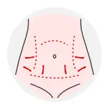
Beneficiile abdominoplastiei
- Redă aspectul unui abdomen plat
- Exclude excesul de piele și grăsime din regiunea abdominală
- Reface musculatura abdominală slăbită sau depărtată
- Tonifică pielea
- Îmbunătățește semnificativ aspectul fizic și uniformizează fizionomia
- Intervenția se poate face atât femeilor, cât și bărbaților
- Procedura durează puțin, iar rezultatele sunt vizibile pe termen îndelungat
- Trupul arată mai suplu, iar încrederea în sine este redobândită
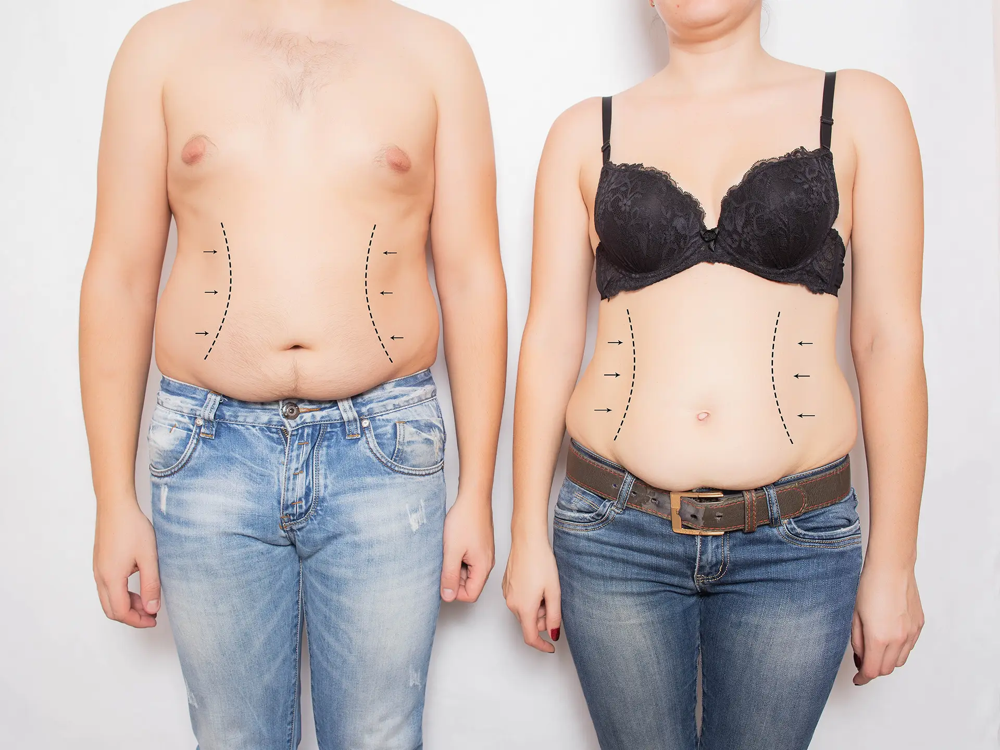
Operația de abdominoplastie poate fi de două tipuri
Abdominoplastie totală/completă
Se îndepărtează excesul de piele și se întăresc mușchii pe toată zona abdominală, inclusiv în jurul ombilicului. Operația durează de obicei 2-5 ore, în funcție de suprafața pe care se întinde grăsimea. Adesea se asociază lipoaspirația, lipectomia sau corectarea diastazisului musculaturii abdominale.
Abdominoplastie parțială
O procedură limitată, folosită pentru a corecta problemele doar în cazul abdomenului inferior. Se îndepărtează excesul de piele de sub ombilic și se întăresc doar mușchii abdominali inferiori. Intervențiile parțiale pot dura 1-2 ore.
În ce constă procedura de abdominoplastie
Cel mai adesea, chirurgul va face o incizie pornind de la un os al șoldului la celălalt, pe linia de deasupra pubisului. O altă incizie va elibera ombilicul de țesutul înconjurător. Apoi chirurgul separă pielea de peretele abdominal până la coaste, cu scopul de a elibera mușchii verticali ai abdomenului. Mușchii sunt cusuți din nou pe linia de mijloc — rezultă un perete abdominal mai ferm și o talie mai îngustă.
Operația de abdominoplastie necesită 2-7 zile de spitalizare, în funcție de particularitățile fiecărei persoane. Pansamentele vor fi aplicate zilnic și vei purta un corset (burtieră) elastic. Mobilizarea abdomenului este recomandată imediat, de a doua zi postoperator.
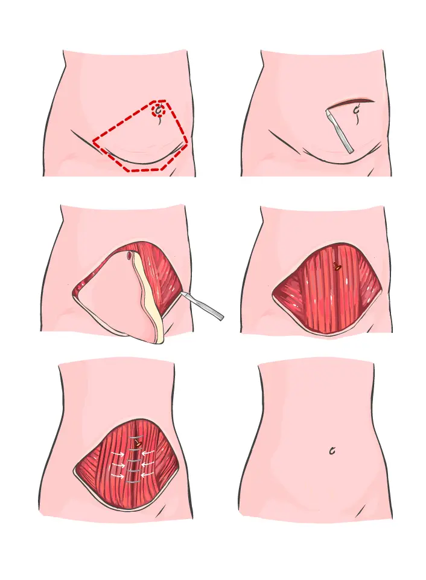
Indicații preoperatorii
- La indicația medicului, cu 2 săptămâni înaintea operației, întrerupe consumul de aspirină sau alte medicamente ce pot influența coagularea sângelui.
- Anticoncepționalele trebuie întrerupte cu 1 lună înainte de intervenție.
- Intervenția chirurgicală se efectuează în afara zilelor de menstruație.
- Dacă ai probleme medicale (tensiune, afecțiuni vasculare, diabet, epilepsie, alergii), anunță medicul chirurg.
- Evită fumatul cu cel puțin 1-2 săptămâni înainte de operație.
- Expunerea la soare sau solar trebuie evitată, mai ales în zona abdominală.
- Greutatea trebuie să fie stabilă — evită cura de slăbire înainte de operație.
- Nu mânca și nu bea nimic în noaptea dinaintea operației.
Recuperarea postoperatorie
Pentru câteva zile după intervenție, abdomenul va fi probabil umflat și vei simți dureri și disconfort care pot fi controlate prin medicație. Abdomenul va fi acoperit cu un brâu elastic medical cel puțin o lună postoperator. Imediat după operație vei fi încurajat/ă să te ridici și să te miști, pentru a asigura o bună circulație.
Firele de sutură de la suprafață vor fi păstrate 10-12 zile. Este recomandat să întrerupi activitatea la muncă circa 4 săptămâni. Băile în piscină sau în mare nu sunt recomandate în primele 2 luni, iar cicatricea nu va fi expusă soarelui înainte de 6-10 luni.
Imediat după operație vei observa o îmbunătățire evidentă a abdomenului. Pe măsură ce te vindeci și inflamația se retrage, se va evidenția un contur mai ferm, iar rezultatul se poate menține ani de zile.
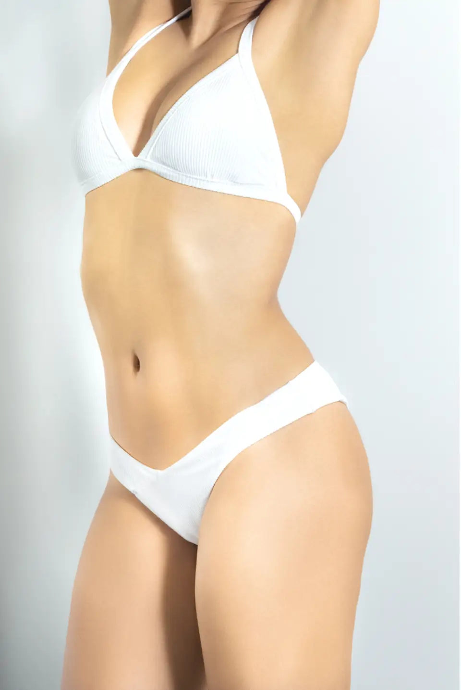
Altă opțiune pentru un abdomen plat este liposucția
- Liposucția poate fi, de asemenea, o soluție — medicul îți va explica opțiunile viabile pentru tine în timpul consultației.
- Este o opțiune corectă numai în cazul în care pielea este elastică și tonusul muscular bun.
- Liposucția poate înlătura grăsimea abdominală, dar nu poate întinde pielea lăsată și nici strânge peretele muscular.
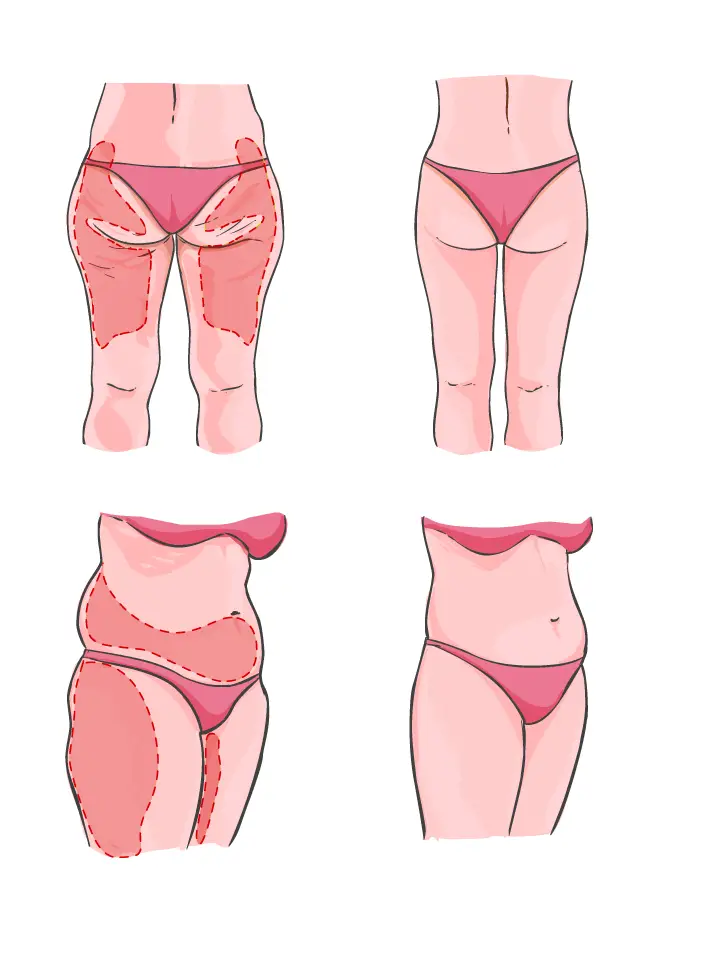
Rezultate — înainte și după
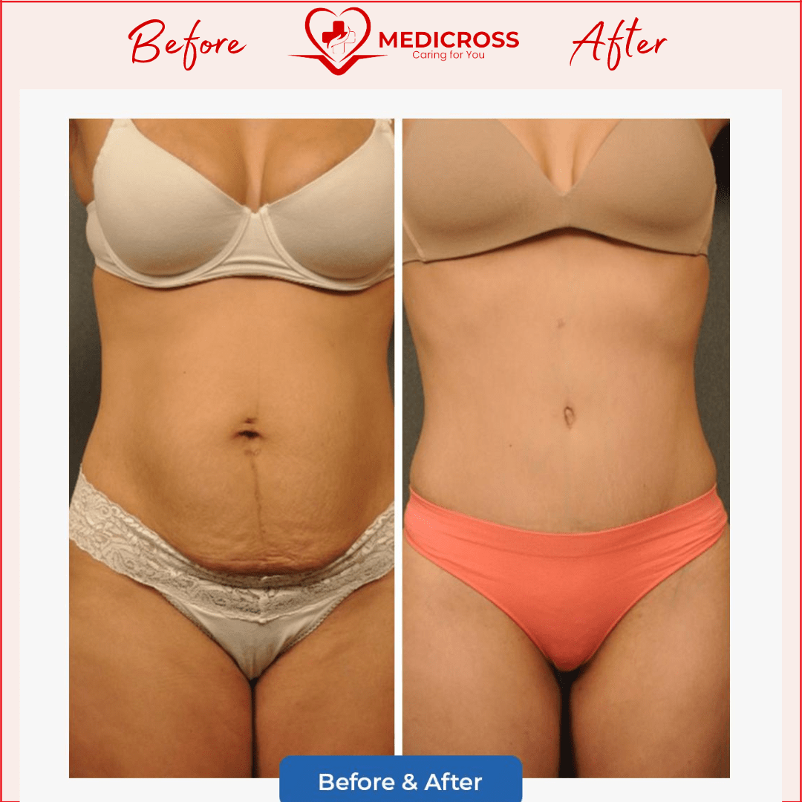
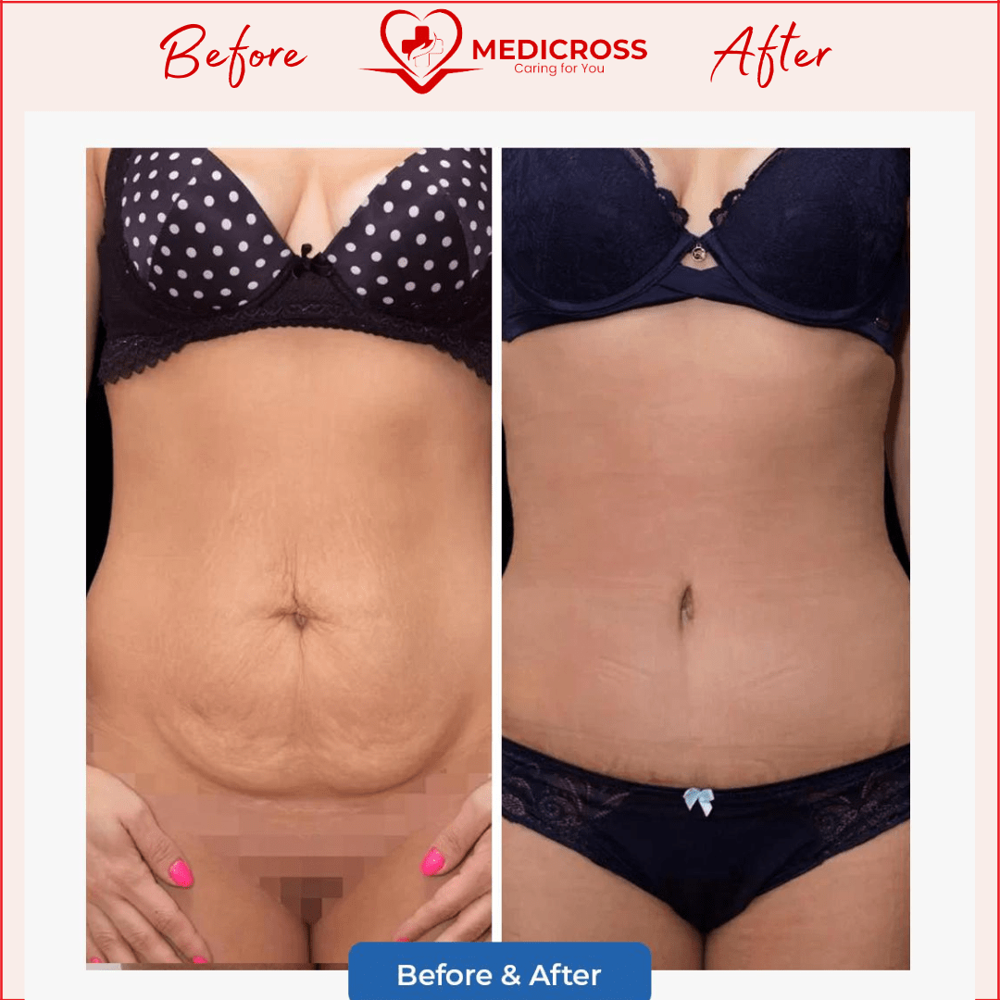
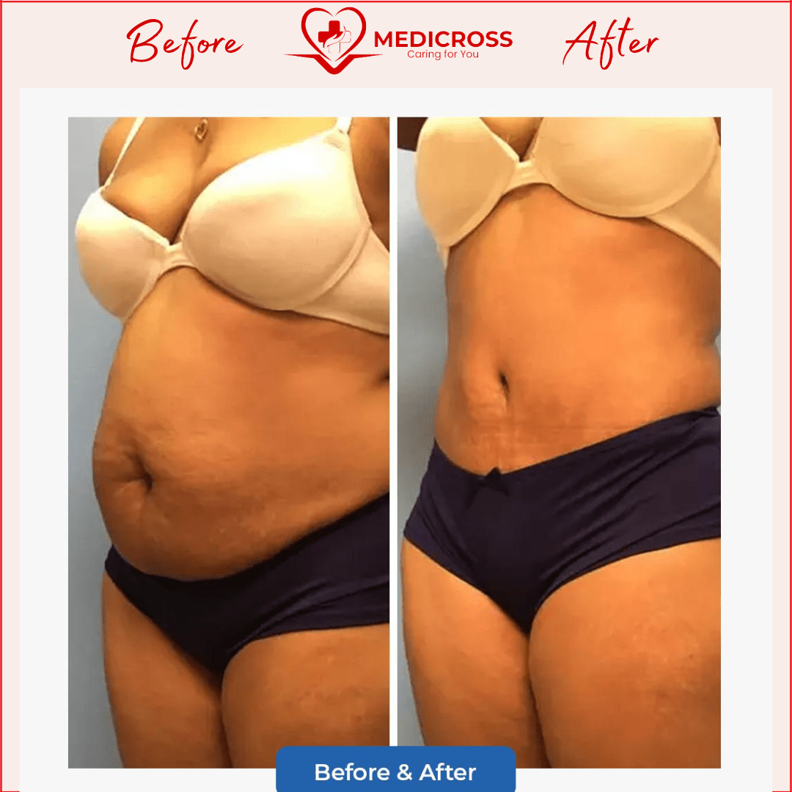
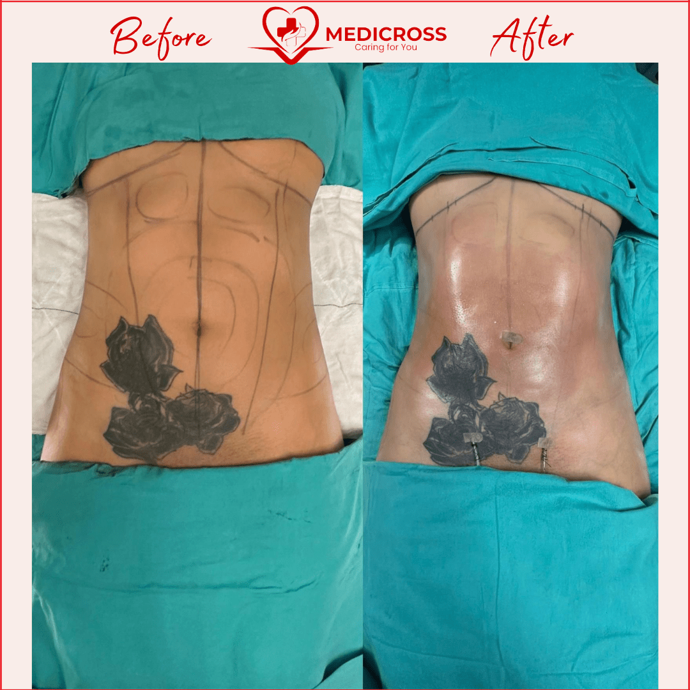
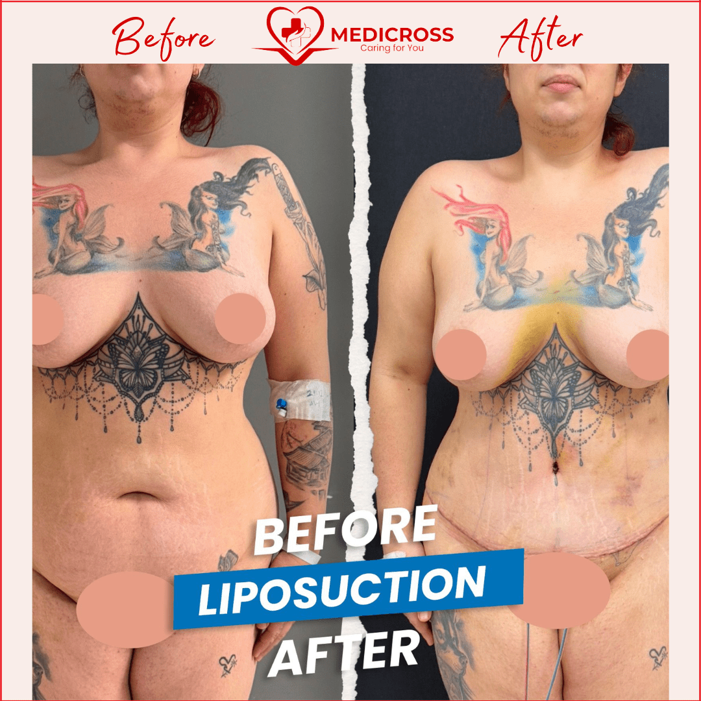
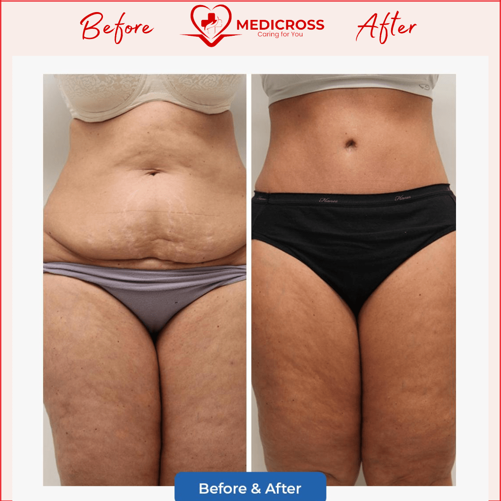
De ce să alegi Tratamente Turcia by Medicross
- Abordare personalizată, adaptată la nevoi diferite și unice pentru fiecare pacient.
- Suntem asociați cu spitale din Turcia, Istanbul, cu experiență îndelungată.
- Intervențiile medicale sunt realizate în centre dedicate.
- Împreună cu partenerii noștri am creat un întreg program dedicat pacienților.
- Asigurăm translator, fiind conștienți că pacienții noștri au nevoie de comunicare permanentă.
- Echipa medicală va fi în contact cu tine oricând ai nevoie, atât înainte, cât și după operație, pe termen lung.